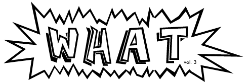
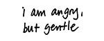
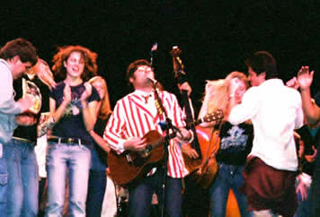
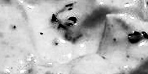
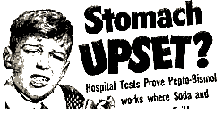
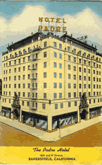
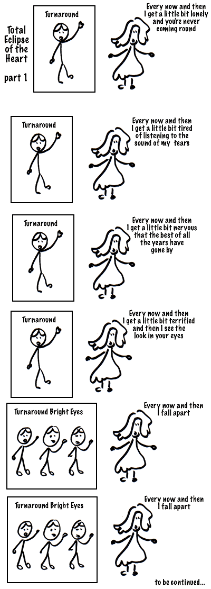
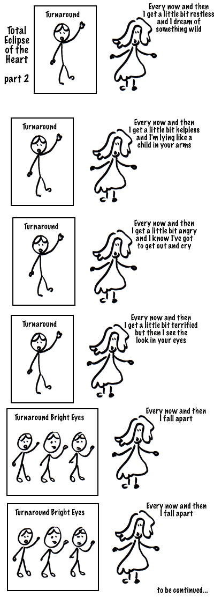
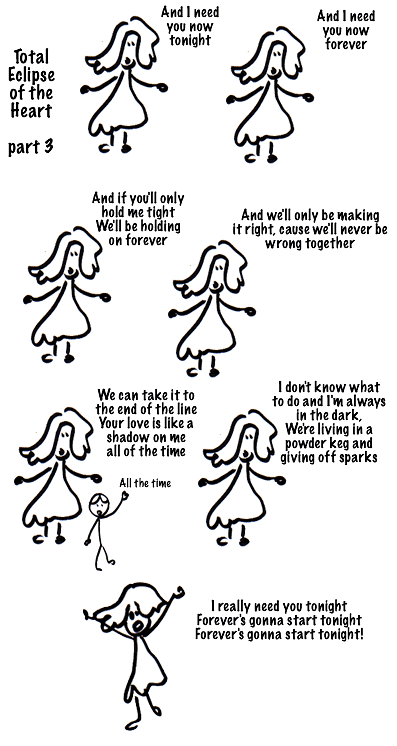

Wipe Your Ass Say Yeah
10/18/2005 04:18:48 AM
I was going to write something totally outraged to kick off this new chapter of my weblog, but I'm too sleepy to be angry, and also I can't stop thinking about something. Did you know that there are places in the world where people don't use toilet paper? And you know what people used to use before toilet paper was invented? Believe me, it ain't pretty.
My whole life, I've never been able to fantasize about being stranded on a deserted island, because I always start thinking about things like what I'd do for TP, and the whole fantasy pretty much unravels from there. (Sometimes when I'm feeling generous, I fantasize that the boat I was on was carrying a shipment of 1,000 tons of Charmin when it sank. In waterproof containers. With, uh, flotation devices attached. Ah, screw it.)
I've never used mere water to clean up after a "number two," so I don't know how clean you can get yourself that way. The absence of abrasives suggests to me that you don't really get that clean, unless you really go to town on your butt with your left hand. Which is pretty gross in itself. Anyway, what I picture is a lot of people walking around with poopy butts.
Which is weird, because you know, why not walk around with poopy butts? I mean, when did the standard of cleanliness become a near-total absence of fecal material around the anus? Is it all just a conspiracy by toilet paper manufacturers, to make us use more and more TP? The introduction of flushable "freshness" wipes seems to point to "yes." Of course, I don't really know what kind of standards the rest of you have. For all I know, some of you reading this don't even wipe at all. (If you're reading this and you're a certain friend of my sister who, when you were ten, used to leave a fragrant trail through the house every time you came over, I know you don't.) But I'm assuming most of you out there more or less keep yourselves as free of poop-type material as possible.
But what I'm saying, what I'm saying is that this unending quest to maintain a clean bottom is really not making us any happier than people who used to keep a corn cob on a string in their outhouse. The cleaner our bottoms, the more grossed out we are when we are even slightly unclean. Our butts may be tidier, but our threshold of Ew just keeps dropping lower as our standards grow higher. Eventually we'll need to shower in Lysol after every bowel movement just to feel normal.
Ahhh...Lysol.
Not that we should just give up and walk around with poopy butts. No. God, no. But it's just interesting in general to think about how doggedly we pursue comfort and cleanliness, and how little difference it actually makes to the quality of our lives. The more we get what we want, the more we want. That's why we're DOOMED.
Aw yeah, I got angry there at the very end. Excellent.
- - - Comments - - -
AUTHOR: j-a
EMAIL: jeonga_kim@yahoo.co.uk
IP: 66.171.90.42
URL: http://www.whatarewedoinghere.blogspot.com
DATE: 10/18/2005 07:00:32 AM
i remember a story about how my old boss got sick because he got a kebab from a guy who made his with his left hand...eurgh....
-----
COMMENT:
AUTHOR: hannah
EMAIL: misshannah@gmail.com
IP: 68.117.140.74
URL: http://www.livejournal.com/users/misshannah
DATE: 10/18/2005 09:26:28 AM
THIS LOOKS AWESOME.
-----
COMMENT:
AUTHOR: B²
EMAIL: b@weirdsmobile.com
IP: 24.183.56.113
URL: http://www.weirdsmobile.com/b/
DATE: 10/18/2005 10:34:49 AM
j-a: Bleh! And reminds me of the "stink-palm" scene in Mallrats, which I just watched last night. Gruesome.
hannah: Thanks! I'm just glad I was able to share those awesome outraged Mario brothers with the world.
-----
COMMENT:
AUTHOR: jennifer and the beans
EMAIL: beanmom@beanmom.com
IP: 69.242.82.172
URL: http://www.kjsl.com/~beanmom/beandiary.html
DATE: 10/18/2005 11:31:19 AM
Speaking as someone who changes diapers on a regular basis, a poopy butt seems to become an itchy butt.
And don't joke about the Lysol. Or haven't you seen this and this? :P
-----
COMMENT:
AUTHOR: Jim
EMAIL: chaos@corrupt.net
IP: 24.12.9.132
URL: http://chaos.corrupt.net
DATE: 10/18/2005 11:44:45 AM
Beavis is often quite happy, and he's none too diligent about the bathroom hygiene.
This does look awesome. However, I did notice that on Firefox when you widen the window beyond approximately 940 pixels, a white gap shows up between the mouseover images and the "static" images in the Home/Archives/About thing.
Then again, it does make me say "What!" And perhaps the response is "Because fuck you is why!"
-----
COMMENT:
AUTHOR: B²
EMAIL: b@weirdsmobile.com
IP: 24.183.56.113
URL: http://www.weirdsmobile.com/b/
DATE: 10/18/2005 02:07:42 PM
Jennifer: Auuuugghghhhhh!!!
Jim: Thanks for the heads-up. Firefox itself makes me say "What!" And I guess Mozilla.org would have the same reply to me!
-----
COMMENT:
AUTHOR: hannah
EMAIL: misshannah@gmail.com
IP: 68.117.140.74
URL: http://www.livejournal.com/users/misshannah
DATE: 10/18/2005 02:28:49 PM
Jim, are you sure about Beavis? He asks for TP pretty frequently; he seems fairly....attentive...
-----
COMMENT:
AUTHOR: hemaworstje
EMAIL: hemaworstbroodjeshoarma@hotmail.com
IP: 82.75.64.17
URL: http://ffkieke.web-log.nl/
DATE: 10/18/2005 04:42:46 PM
I bleech it every now and day, in order to get the pink color go away..
-----
COMMENT:
AUTHOR: Jim
EMAIL:
IP: 65.167.132.200
URL: http://chaos.corrupt.net
DATE: 10/18/2005 06:32:07 PM
Hmm, you've highlighted an interesting paradox about Beavis. He loves mentioning TP, but he's not very good at using, at least according to the many chastisements about his smell and cleanliness from Butt-head.
-----
Thots
10/18/2005 10:27:30 AM
Not that I would ever post a mindless weblog entry just to test the layout, but why don't they have hamburger dogs, I mean like hamburgers shaped like hot dogs and eaten in hot dog buns? I have some ground beef, and hot dog buns, and I wish I could make a "burger dog," but I can't. Why? Because...crap, I don't know. It's just not done.
Update: Dude, I was wrong about it not being done. Although...now that I've seen a photo...I'm not sure it really should be done...
- - - Comments - - -
AUTHOR: jennifer and the beans
EMAIL: beanmom@beanmom.com
IP: 69.242.82.172
URL: http://www.kjsl.com/~beanmom/beandiary.html
DATE: 10/18/2005 11:24:34 AM
Argh. You're right. The photo makes it quite clear that this is not something that should be done. Ever.
-----
COMMENT:
AUTHOR: Jim
EMAIL: chaos@corrupt.net
IP: 24.12.9.132
URL: http://chaos.corrupt.net
DATE: 10/18/2005 11:34:33 AM
That photo makes me say, "What!"
-----
COMMENT:
AUTHOR: B²
EMAIL: b@weirdsmobile.com
IP: 24.183.56.113
URL: http://www.weirdsmobile.com/b/
DATE: 10/18/2005 02:05:32 PM
I'm also amused by the fact that blogged about this thing right after posting about poopy below. I really didn't mean to turn this into a scat blog. Honestly.
-----
COMMENT:
AUTHOR: jennifer and the beans
EMAIL: beanmom@beanmom.com
IP: 69.242.82.172
URL: http://www.kjsl.com/~beanmom/beandiary.html
DATE: 10/18/2005 02:25:30 PM
Your fingers SAY "I didn't mean to turn this into a scat blog" but the blog tells a different story. :)
-----
COMMENT:
AUTHOR: B²
EMAIL: b@weirdsmobile.com
IP: 24.183.56.113
URL: http://www.weirdsmobile.com/b/
DATE: 10/18/2005 02:30:54 PM
Two entries in and it's turning into a German scheisse video...
-----
COMMENT:
AUTHOR: Scott D
EMAIL: scottdonaldson@gmail.com
IP: 146.244.113.180
URL: http://www.duringflight.com/groundcontrol
DATE: 10/18/2005 02:32:01 PM
Wow.. that photo looks nasty. And kudos on the new format! You have some great template skills... next to your ninja skills, num-chuck skills, and any other Napoleon Dynomite skills you rule at. =) ..sorry, just watched that last night.
-----
COMMENT:
AUTHOR: B²
EMAIL: b@weirdsmobile.com
IP: 24.183.56.113
URL: http://www.weirdsmobile.com/b/
DATE: 10/18/2005 02:34:10 PM
Gosh!
-----
COMMENT:
AUTHOR: Sherri
EMAIL: Sylkenvelvet@yahoo.com
IP: 68.59.165.165
URL: http://www.formyselfandstrangers.blogspot.com
DATE: 10/19/2005 01:10:54 PM
I can try not to think too hard about the combination of blog topics and consider them as simply separate (but equal) entries, drawing no conclusions and making no judgements (and not, for gods' sake, looking at any pictures). I can do all this and still be happy because you're writing.
You're writing. And I SO have to get that picture of the Mr. Bidet sign in miami for you.
-----
COMMENT:
AUTHOR: erika
EMAIL: yummy-nospam@elfcakes.com
IP: 71.192.6.43
URL: http://www.elfcakes.com/blogg
DATE: 10/20/2005 02:47:16 PM
Egads! That is a disgusting looking food product.
Restroom Break, Boss?
10/20/2005 04:26:59 AM
For those of you poor slackerly souls concerned that the "oversized type is the new orange" motif of this weblog might get you in trouble with bosspersons who may be peering over your shoulder even as you read this, I offer the return of the employer-peripheral-vision-friendly Work-Safe Weblog. (Permanent link over on the right.) Bookmark this instead of my regular URL -- and don't say B² never did nuthin' for ya!
Going to see The Decemberists tonight. Woo hoo!
Here's their cover of "Human Behavior" (Björk).
- - - Comments - - -
COMMENT:
AUTHOR: jima
EMAIL: jima@legnog.com
IP: 69.8.212.254
URL: http://www.empty-handed.com/
DATE: 10/20/2005 09:51:49 AM
Oh, B² does PLENTY of stuff for me. He did my taxes that one year, for a start. (Speaking of which, I'm eligible for parole in 18 months! Hooray!)
-----
COMMENT:
AUTHOR: hannah
EMAIL: misshannah@livejournal.com
IP: 144.92.40.99
URL:
DATE: 10/20/2005 12:48:29 PM
w00t, indeed!
"and we'll all come praise the INFANTA"
-----
COMMENT:
AUTHOR: groovebunny
EMAIL: wabbit@groovebunny.com
IP: 68.224.168.139
URL: http://www.groovebunny.com
DATE: 10/23/2005 01:27:48 AM
Yay for worksafe!!! But since my work now monitors all the urls we poor work hounds visit...it does me no good. :(
-----
COMMENT:
AUTHOR: jennifer and the beans
EMAIL: beanmom@beanmom.com
IP: 69.242.82.172
URL: http://www.kjsl.com/~beanmom/beandiary.html
DATE: 10/24/2005 07:43:09 AM
Can I just say, in a totally non-threatening way, that I am in love with the work-safe browser? kthx.
¡Mas Musica!
10/20/2005 01:07:49 PM
Find him, bind him
Tie him to a pole and break
His fingers to splinters
Drag him to a hole until he
Wakes up naked
Clawing at the ceiling
Of his grave...
-- The Decemberists, "The Mariner's Revenge Song"
10/24 Edit: Files removed to conserve bandwidth. Sorry!
For a limited time only, here are some songs by the Decemberists and Cass McCombs, who are playing here in Madison tonight.
From the Decemberists, their 5-song Picaresqueties EP, a disc of outtakes from their recent (awesome ass) Picaresque album.
Listen: The Decemberists, "Sixteen Military Wives" from PicaresqueI hadn't heard of Cass McCombs before I heard he was opening for the Decemberists, but count me in as a new fan. This is sort of a hodgepodge -- a potpourri, if you will -- of McCombs tunes. I'm not sure how to describe it. Eclectic indie rock? What if Procol Harum were 80's shoegazers?
Listen: Cass McCombs, "Equinox" from PREfectionOn the topic of illicit activities, I was reading this letter to the editor in the local rag by this guy who started smoking pot when he was 46 or 47 and became this totally mellowed out hippie, and it occurred to me that I'd probably be a lot happier in life if I did more recreational drugs. Or some, even.
- - - Comments - - -
COMMENT:
AUTHOR: bakiwop
EMAIL: bino1@hotmail.com
IP: 68.114.238.99
URL:
DATE: 10/21/2005 04:49:43 PM
i sincerely dig the design - nice big fonts and nice layout. it's such a nice break from all the little stuff isee online.
i am also very glad to see you posting again - muy bueno!
-----
COMMENT:
AUTHOR: Marissa
EMAIL: riss@feelingismutual.com
IP: 216.116.252.50
URL: http://www.feelingismutual.com/blog.php
DATE: 10/21/2005 06:08:09 PM
I am jealous of your Decemberists viewing experience. Damn you. Or rather, damn me, for living in the concert black hole of America.
It's nice to have you back.
I was just getting to the end of a LONG ASS entry about the Decemberists show, and my browser crashed on me.
Avenge me.
- - - Comments - - -
COMMENT:
AUTHOR: bakiwop
EMAIL: bino1@hotmail.com
IP: 68.114.238.99
URL:
DATE: 10/22/2005 05:29:56 AM
YAAAAAAAAAAAAAAAAAAAAAAAAAA!!! DEATH TO THE CAPITALIST INFIDEL HEATHEN PIGDOG BROWSERS!!! YAAAAAAAAAAAAAAAA!!!
-----
COMMENT:
AUTHOR: groovebunny
EMAIL: wabbit@groovebunny.com
IP: 68.224.168.139
URL: http://www.groovebunny.com
DATE: 10/23/2005 01:26:05 AM
May a gazillion smelly-footed camels do a drunken bumpity-bumpity-hump dance on suckity-fuckity fuck browsers and urinate into the eyes of their creators!!!!!
-----
COMMENT:
AUTHOR: Scott D
EMAIL: scottdonaldson@gmail.com
IP: 68.111.191.131
URL: http://www.duringflight.com/groundcontrol
DATE: 10/23/2005 05:51:02 PM
*starts up chain-saw Evil Dead style*
Death to the browser!!
-----
COMMENT:
AUTHOR: Neil
EMAIL: neilochka@yahoo.com
IP: 68.68.216.95
URL: http://www.citizenofthemonth.com
DATE: 10/23/2005 08:56:19 PM
Does that mean we'll now be stuck with a short-ass review instead?
-----
COMMENT:
AUTHOR: B²
EMAIL: b@weirdsmobile.com
IP: 24.183.56.113
URL: http://www.weirdsmobile.com/b/
DATE: 10/24/2005 02:03:02 AM
Probably -- but from what I can recall of what I originally wrote, I think we'll all be better off with the short-ass version.
Sea Shanties are the New Hip-Hop
10/24/2005 01:21:13 AM

SET LIST 1. Shanty For The Arethusa (Her Majesty the Decemberists)SEVEN THINGS I MANAGED TO REMEMBER ABOUT THE DECEMBERISTS SHOW AFTER SAFARI 2.0.1 PUSHED ME DOWN AND STOLE MY LUNCH MONEY
2. The Sporting Life (Picaresque)
3. Billy Liar (Her Majesty)
4. Los Angeles, I'm Yours (Her Majesty)
5. Shiny (Five Songs)
6. July, July! (Castaways and Cutouts)
7. When I Was A Baby (The Donner Party cover)
8. Eli, The Barrow Boy (Picaresque)
9. Angel, Won't You Call Me? (Five Songs)
10. We Both Go Down Together (Picaresque)
11. The Engine Driver (Picaresque)
12. On The Bus Mall (Picaresque)
13. The Bachelor And The Bride (Her Majesty)
14. Sixteen Military Wives (Picaresque)
15. The Chimbley Sweep (Her Majesty)
16. ENCORE: The Mariner's Revenge Song (Picaresque)
- - - Comments - - -
AUTHOR: hannah
EMAIL: misshannah@livejournal.com
IP: 144.92.40.99
URL:
DATE: 10/24/2005 11:07:00 AM
Hey, great to see you again!
-----
COMMENT:
AUTHOR: mike
EMAIL: mike@whybark.com
IP: 216.173.212.234
URL: http://mike.whybark.com
DATE: 10/24/2005 08:24:18 PM
The Fucking Tain! Ha! HORSLIPS ROOLS OK!
http://www.horslipsrecords.com/
http://www.horslipsrecords.com/tain.html
I think that this band is the inspiration for the Stonehenge scene in Spinal Tap, and yet, I find them somehow brilliant and retarded at the same time. Perhaps it is the use of electric mandolins.
-----
PING:
TITLE: The Decemberists, Orpheum Theatre 10/20/2005
URL: http://www.dane101.com/music/2005/10/21/the_decemberists_orpheum_theatre_10/20/2005
IP: 217.160.226.19
BLOG NAME: Dane101
DATE: 10/30/2005 04:04:32 PM
[inline:5]Looking up at the highest stage the Decemberists have ever played on, my eyes were fixed on the bird art draped over audio equipment and attached to microphones and instruments. The Portland, OR band's tour is titled "The Flight of the Mistle Th
NaDruWriNi, NaNoWriMo, Hey Hey Hey, Goodbye
10/24/2005 10:33:04 AM
So today I signed up for National Novel Writing Month. I think it's the first time I've ever actually registered for this. I'm not sure why I registered instead of just doing it. Hm. Anyway, that's where I'm at next month. I can't wait to get started on this. I mean, how often do you get a chance to churn out reams of hastily-written, poorly-thought-out prose, composed on the fly and foisted upon the world with little or no regard for coherence or uh
Faithful readers of this site know that for the past couple years I've been offering a sort of alternative writing project at around this time, the National Drunken Writing Night, for people who don't have the time/energy to spend a month churning out a 50,000-word novel, and enjoy getting sloppy drunk and writing a bunch of crap that they'll feel really embarrassed about the next morning. Well, I'm not spearheading it this year, but passed the baton over to Brittanie at A Broad Abroad, so it'll still be happening. I never meant it to be a super-organized thing, but more of an idea to float out into the ether, so I'm happy to see it going out into the world. What I'd like to see, ultimately, is a bunch of "nodes" where people might be doing it on different nights or whatever, but for everyone doing it on a particular night, there's one location where you can find links to the participants. (If you're planning on participating, let me know in the comments to this entry, and I'll put up a link to your blog or wherever you're going to be writing/drinking.)
Anyway, mark your calendars and chill your bottles:
- - - Comments - - -
COMMENT:
AUTHOR: D Bunny
EMAIL: drunkbunny@gmail.com
IP: 24.8.21.81
URL: http://drunkbunny.org/
DATE: 10/24/2005 11:48:49 AM
Glad to see you back here. I love your "powered by anger" logo at the bottom of the page!
-----
COMMENT:
AUTHOR: carolyn
EMAIL: paperhaus@gmail.com
IP: 24.130.199.185
URL: http://www.pinkyspaperhaus.com
DATE: 10/24/2005 11:55:19 PM
I'm in! At Pinky's Paperhaus, the bar is open.
-----
COMMENT:
AUTHOR: Scott D
EMAIL: scottdonaldson@gmail.com
IP: 68.111.191.131
URL: http://www.duringflight.com/groundcontrol/
DATE: 10/25/2005 12:56:05 AM
Yes! I am so ready for this....
-----
COMMENT:
AUTHOR: Amber
EMAIL: amusicbuff@gmail.com
IP: 209.204.185.110
URL: http://aspectsofamber.blogspot.com
DATE: 10/25/2005 06:54:55 PM
Hey, B! You're BACK! Awesome!
Can't participate in NaDruWriNi, sorry.
Problem is, last year I realized I can't write while drunk.
Bummer, isn't it? But maybe I'll get drunk and read others writing while drunk. That sounds fun.
Maybe.
-----
COMMENT:
AUTHOR: groovebunny
EMAIL: wabbit@groovebunny.com
IP: 68.224.168.139
URL: http://www.groovebunny.com
DATE: 10/30/2005 10:19:05 AM
I am so INNNN!
-----
COMMENT:
AUTHOR: txteva
EMAIL: nadruwrini@txteva.co.uk
IP: 82.32.250.177
URL: http://www.txteva.co.uk
DATE: 11/01/2005 04:09:09 PM
Hey,
I saw the nadruwrini and I'm taking part!
Eva
-----
COMMENT:
AUTHOR: hannah
EMAIL: misshannah@livejournal.com
IP: 144.92.40.99
URL:
DATE: 11/03/2005 02:00:46 PM
HELLO, could you change my link in the sidebar to point to my special drunkenness weblog instead of my lj?
thanX muCH
-----
COMMENT:
AUTHOR: Skutir
EMAIL: skutir@gmail.com
IP: 24.94.223.77
URL: http://www.deadjournal.com/users/nadruwrini/
DATE: 11/03/2005 04:47:03 PM
About time somebody besides Raymond Chandler combined my two favorite hobbies.
-----
COMMENT:
AUTHOR: hannah
EMAIL: misshannah@gmail.com
IP: 68.117.140.74
URL: http://www.livejournal.com/users/misshannah
DATE: 11/03/2005 05:47:57 PM
OKAY
I created an account at del.icio.us for nadruwrini. the password is 11052005. Anyone can log in and post their own blog or journal to this del.icio.us account and then we can view a list of all the participating writers in one place.
-----
PING:
TITLE: BWI (Blogging While Intoxicated)
URL: http://abroad-abroad.org/index.php/2005/10/09/blogging-while-intoxicated/
IP: 67.28.112.47
BLOG NAME: http://abroad-abroad.org
DATE: 10/24/2005 10:00:22 PM
Last year, in an exercise of self-importance and procrastination, I decided to participate in National Novel Writing Month, a project in which a big group of people without much to say try to say it all in 50,000 words, all of them written within a mo...
¡Jonathan, Te Vas a Emocionar!
10/24/2005 04:32:30 PM
Listen: Jonathan Richman, "I Was Dancing In The Lesbian Bar" from Surrender To JonathanAs groovy as Richman was, I pretty much knew what to expect from his show, and I wasn't surprised, so I enjoyed it and all but there weren't any "holy crap" moments. I'd love to see him play with a full band. (Last night, it was just him on acoustic guitar and uh, crap, what do you call that thing with all the crazy tiny silver jangly things on it, shit what is that thing and Tommy Larkins on drums.) The real surprise for yours truly was Vic Chesnutt. I'm sorry I've never sought out this guy's stuff before. If you're a fan of folk or alt country and haven't listened to Chesnutt before, do it now. Now! Don't make me come over there. Anyway, yeah. It was just him on stage, with a guitar, a harmonica, and a Powerbook, which he's got set up in a cool way to help him with certain effects and things (he's partially paralyzed due to a drunk driving accident in his youth, so he's wheelchair-bound and seems to have only limited use of his right arm). His vocal delivery is distinctive and powerful, and he writes some pretty amazing lyrics -- although the guy could sing classified ad listings and still be riveting.
Listen: Vic Chesnutt, "Ignorant People" from Ghetto BellsHe's also an interesting contrast with Richman, which Chesnutt himself pointed out on one of his more amusing songs, which I'm gonna call "I'm Opening for Jonathan Richman." His lyrics are fairly grim, in keeping with his self-described nihilistic world-view, but enlivened with an acidic sense of humor. One song of his, "Iraq," which compares the U.S. occupation of Iraq to a battered woman being raped by her so-called rescuer, was pretty frickin' chilling. Vic's music isn't exactly the kind of thing I'd play at parties, but it's powerful, intense, nakedly honest stuff.
- - - Comments - - -
COMMENT:
AUTHOR: hannah
EMAIL: misshannah@gmail.com
IP: 68.117.140.74
URL: http://www.livejournal.com/users/misshannah
DATE: 10/24/2005 05:40:21 PM
I think those things are called hand sleigh bells. I saw some things on google that look like it.
Excellent re-cap.
To me, the most chilling part of "Iraq" was at the end when he kind of screamed "you'll learn to like it, you'll learn to like it, you'll learn to lo-o-ooo-ove me."
You didn't mention the poseur scenestresses who talked trash about me and almost made us throw down. Their day is coming.
-----
COMMENT:
AUTHOR: B²
EMAIL: b@weirdsmobile.com
IP: 24.183.56.113
URL: http://www.weirdsmobile.com/b/
DATE: 10/24/2005 05:43:58 PM
I didn't want to sully the musical discussion by mentioning those skanky bitches. Let's just say that if they actually show up at the High Noon this week there's gonna be a hurtin'.
-----
COMMENT:
AUTHOR: L Man
EMAIL: littlemanclan@gmail.com
IP: 65.34.53.126
URL: http://littlemanclan.typepad.com/
DATE: 10/24/2005 10:02:09 PM
Lots of green stuff in Florida my dear friend B. You know, with the tropical weather and all.
Need to look my up next time you're in town. I'll expose you to some horticultural marvels all right. (Don't forget your hedge clippers.)
Best -- L Man
-----
COMMENT:
AUTHOR: gene
EMAIL: spinward@hotmail.com
IP: 170.220.250.13
URL: http://www.somethingoutofnothing.net
DATE: 10/26/2005 07:12:08 PM
And not a tambourine?
Since I know you're an EC (Costello, not Clapton - although you might also be a Claptonite) fan, you'll want to check out Vic Chestnutt and Jack Logan covering "Alison".
http://www.amazon.com/exec/obidos/tg/detail/-/B00007GZN8/qid=1130371813/sr=1-2/ref=sr_1_2/102-7021210-5790525?v=glance&s=music
Also amazing covers of "Angels Want to Wear My Red Shoes" and "Watch Your Step".
What!
10/25/2005 06:02:07 AM
Yes, I changed the design again. I think I might have set some kind of personal record for shortest-lived weblog layout. I dunno...I loved the angry Mario graphic, but I got sick of looking at it. Also, ten zillion complaints about the oversized type = smaller type. Hope you like the new(er) look.
- - - Comments - - -
COMMENT:
AUTHOR: hannah
EMAIL: misshannah@gmail.com
IP: 68.117.140.74
URL: http://www.livejournal.com/users/misshannah
DATE: 10/25/2005 07:49:54 AM
Super classy!
-----
COMMENT:
AUTHOR: jima
EMAIL: jima@legnog.com
IP: 69.8.212.254
URL: http://www.empty-handed.com/
DATE: 10/25/2005 08:28:03 AM
Every time you change the layout, it makes the Baby Jesus cry. So keep 'em coming!!!
-----
COMMENT:
AUTHOR: Marissa
EMAIL: riss@feelingismutual.com
IP: 216.116.252.50
URL: http://www.feelingismutual.com/blog.php
DATE: 10/25/2005 10:34:19 AM
My eyes say thanks!
-----
COMMENT:
AUTHOR: D Bunny
EMAIL: drunkbunny@gmail.com
IP: 24.8.21.81
URL: http://drunkbunny.org/
DATE: 10/25/2005 11:06:20 AM
I love this layout. I love all of your layouts. I think you could make a solid living just designing blog layouts.
-----
COMMENT:
AUTHOR: Sherri
EMAIL: Sylkenvelvet@yahoo.com
IP: 68.59.165.165
URL: http://www.formyselfandothers.blogspot.com
DATE: 10/25/2005 09:12:09 PM
Yeah, it wouldn't be you if the design didn't change. I'd suspect you were replaced with a clone. In fact, for a long while there, I thought maybe you had.
-----
COMMENT:
AUTHOR: bakiwop
EMAIL: bino1@hotmail.com
IP: 68.114.238.99
URL:
DATE: 10/26/2005 04:30:13 PM
man, i loved the oversized type - o could read it! and despite what everyone says i DO NOT NEED GLASSES!
-----
COMMENT:
AUTHOR: Rengirl
EMAIL: spamthis@pixelsensei.com
IP: 65.197.232.3
URL:
DATE: 10/26/2005 06:27:01 PM
I love the angry guy at the top. This layout is awesome and my eyes are liking it.
Nothing beats that Byunomatic animated gif from a long time ago though. Does anyone else remember that?
-----
COMMENT:
AUTHOR: Brittanie
EMAIL: brittanie@abroad-abroad.org
IP: 61.75.146.176
URL: http://abroad-abroad.org
DATE: 10/27/2005 09:08:21 AM
Dude, this web site is like the Cher of web design.
(P.S. I'm drunk right now, on soju. I'm in training, you might say.)
Rosa Parks, 1913-2005
10/25/2005 07:39:26 AM
Looking back in 1988, Mrs. Parks said she worried that black young people took legal equality for granted.
Older blacks, she said ''have tried to shield young people from what we have suffered. And in so doing, we seem to have a more complacent attitude.
''We must double and redouble our efforts to try to say to our youth, to try to give them an inspiration, an incentive and the will to study our heritage and to know what it means to be black in America today.''
At a celebration in her honor that same year, she said: ''I am leaving this legacy to all of you ... to bring peace, justice, equality, love and a fulfillment of what our lives should be. Without vision, the people will perish, and without courage and inspiration, dreams will die -- the dream of freedom and peace.''
- - - Comments - - -
COMMENT:
AUTHOR: Sandra
EMAIL:
IP: 68.249.78.70
URL:
DATE: 10/25/2005 12:37:15 PM
You know, I think about the fact that our heroes have to die at some point, but it's always so sad and personally depressing. Nice tribute to Parks, thanks for posting it.
-----
COMMENT:
AUTHOR: The Raz
EMAIL: Kevinrazban@cox.net
IP: 70.187.167.253
URL: http://www.weirdsmobile.com/kevin
DATE: 10/25/2005 11:48:14 PM
I wish I had 1/10th of her guts.


- - - Comments - - -
COMMENT:
AUTHOR: hannah
EMAIL: misshannah@livejournal.com
IP: 144.92.40.99
URL:
DATE: 10/25/2005 03:45:32 PM
What the hell is that a picture of?
-----
COMMENT:
AUTHOR: B²
EMAIL: b@weirdsmobile.com
IP: 24.183.56.113
URL: http://www.weirdsmobile.com/b/
DATE: 10/25/2005 03:56:34 PM
Some generic photo of pasta in alfredo sauce, except altered to make it look especially oogy.
-----
COMMENT:
AUTHOR: Collin
EMAIL: collin@fizzleandpop.com
IP: 207.201.211.58
URL: http://fizzleandpop.blogspot.com/
DATE: 10/25/2005 06:10:35 PM
Okay, fine, but why does it have to cost $12?
-----
COMMENT:
AUTHOR: Jim
EMAIL:
IP: 65.167.132.200
URL: http://chaos.corrupt.net
DATE: 10/25/2005 06:20:53 PM
It is indeed evocatively oogy. Made me think of something like this:
-----
COMMENT:
AUTHOR: Jim
EMAIL:
IP: 65.167.132.200
URL: http://chaos.corrupt.net
DATE: 10/25/2005 06:22:20 PM
Er, like this, that is.
-----
COMMENT:
AUTHOR: Scott D
EMAIL: scottdonaldson@gmail.com
IP: 68.111.191.131
URL: http://www.duringflight.com/groundcontrol/
DATE: 10/25/2005 06:27:06 PM
Ew....
-----
COMMENT:
AUTHOR: Amber
EMAIL: amusicbuff@gmail.com
IP: 209.204.185.110
URL: http://aspectsofamber.blogspot.com
DATE: 10/25/2005 06:59:53 PM
It's a new trend for restaurants to bring you small portions and charge a lot for it. Maybe they figure we''ll be so grateful we didn't have to cook we won't bitch about it.
I just avoid those restaurants after the first time.
Sorry it screwed up your stomach. Although I made a mean Pasta Primavera last night that was yummy! Let me know if you and Miss H want the recipe.
-----
COMMENT:
AUTHOR: hannah
EMAIL: misshannah@gmail.com
IP: 68.117.140.74
URL: http://www.livejournal.com/users/misshannah
DATE: 10/25/2005 08:44:39 PM
I want the recipe, thanks!
-----
COMMENT:
AUTHOR: L Man
EMAIL: littlemanclan@gmail.com
IP: 65.34.53.126
URL: http://littlemanclan.typepad.com/
DATE: 10/25/2005 10:27:55 PM
Yo B, absolutely love the redesign! Nice work for someone without the greenery.
Keep up the good work my brother!
-----
COMMENT:
AUTHOR: Amber
EMAIL: amusicbuff@gmail.com
IP: 209.204.185.110
URL: http://aspectsofamber.blogspot.com
DATE: 10/26/2005 11:36:00 AM
Pasta Primavera
8 asparagus spears, cut into short pieces
12 oz. fresh pasta (I usually use fresh fettuccine but the recipe calls for tagliatelle. I've never see tagliatelle pasta in my life. Really, I think you could use any fresh pasta)
1/3 lb. green beans, cut into short pieces
3/4 cup peas, fresh or frozen (I've never used the peas yet, just because I forget to buy some; still turns out great without)
1 1/2 tbl. butter
1 small fennel bulb, chopped fine
1 1/2 cups heavy whipping cream
2 tbl grated Parmesan cheese (I put in more than this; very good!)
Bring a large saucepan of water to a boil. Add 1 tsp. of salt, asparagus and simmer for 3 minutes.
Remove the vegetables with a slotted spoon and set them aside. Add the pasta to the saucepan and when it has softened, stir in the beans and peas (if you're using frozen peas, add them a few minutes later). Cook for about 4 minutes or until the pasta is al dente.
Meanwhile, heat the butter in a large frying pan. Add the chopped fennel and cook over moderately low heat, for 5 minutes. Add the cream, season with salt and pepper and cook at a low simmer.
Drain the pasta, greens and peas and add them to the frying pan. Add 2 tablespoons of Parmesan and the asparagus. Toss light to coat.
Serve immediately with extra Parmesan. (Although I usually add extra to the pan so it melts)
This seriously takes a short amount of time to do. Less than half an hour for sure; maybe 15 minutes if you hustle and buy pre-shredded Parmesan cheese. And because it's so quick, the asparagus and green beans are nice and crunchy.
Let me know if you try it!
-----
COMMENT:
AUTHOR: hannah
EMAIL: misshannah@livejournal.com
IP: 144.92.40.99
URL:
DATE: 10/27/2005 03:21:21 PM
Thanks, Amber!
I still say this pic looks like chocolate chip ice cream -- unlike Jim's offering, which does *not* look like chocolate chip ice cream.
Crap, I Forgot to Write Anything About the Rhett Miller Show the Other Night
10/29/2005 03:23:03 AM
But that's all right. Because in all honesty, what do I, as a total Rhett Miller/Old 97's neophyte, have to offer in the way of "insight" or "accurate recollection" as regards his musical performance? Miss H, Old 97's über-fan, is the one who should be reviewing the show, not I. Let me not bullshit you. I'm no poseur, man!
That said, Rhett "totally rocked the house" Wednesday night. Being a neophyte as mentioned above, I don't even know what the hell most of the songs were called, but they were way cool, dude. The one about leaving the window open and the cat getting out seems to stick in my mind for some reason. That, and the last song, which was a cahrazy flurry of sweat and pinwheeling forearm and broken guitar strings. This guy to my left, who looked like a frickin' clone of this guy Steve-O I sorta knew in college, was rockin' out like an insane insaniac with the air guitar and I'm glad I wasn't standing next to him holding a beer. His buddy really wanted to hear an Old 97's song called "Designs On You," so much so that he frickin' SCREAMED the title over and over again between like every dang song. (The amusing punchline to that story is that Rhett eventually did play "Designs On You," but only because someone on the other side of the room asked for it. I don't know if that was a deliberate snub of Shouty McLoudmouth, but I'd like to think it was. Punk!)
Opening for Rhett was Griffin House, a mere whelp of 24 who sounds a lot like Bruce Springsteen, Jack Johnson and Sufjan Stevens and was pretty damned awesome that night. Also, a cool guy -- we saw him at the Avenue Bar before the show, talking to an older couple who turned out to be distant relatives of his, and later at the High Noon before his sound check he came up and said hello and that he'd seen us earlier, and chatted with us for a bit. I felt kind of bad that I didn't have anything particularly interesting to say to him. Miss H did, though, which is why she is the perfect companion for me for outings like this where we might potentially have to "converse" with "people." Anyway that was pretty neat. I think he's in the UK now, on tour with Erin McKeown -- crap! Why didn't we get that combo? I mean, Erin McKeown is only the most awesomest purveyor of awesomeness ever to hawk her awesome wares in the arena of musical awesomity. She's in the top 50, anyway.
Beverage-wise, research seems to point conclusively to the conclusion that vodka is the way to go, if you want to avoid excessive intoxication and/or hangover. VODKA IS THE NEW ABSINTHE because, like absinthe, it provides some of the benefits of booze without messing up your mind, so you can think coherently but still be all mellow and shit. Anyway, vodka, being the "shizzle," or "shiz-nit," will be my beverage of choice on National Drunken Writing Night, November 5th.
To sum up:
Rhett Miller "rocked"
Griffin House: super nice guy and great musician
If I were in Manchester, UK right now I'd be all, "Oi would fancy seein' Griffin 'Ouse wot is openin' for that bit o' crumpet Erin McYoon or summat, eh guv'nor? Eh? Eh? 'AAARRRRRYYY POT'ER!!!!"
The word "awesome" appears in some form five times in this entry
VODKA IS THE NEW ABSINTHE
Ironically declaring [something] to be the new [something] is the new ironic use of 133t-speak and/or hip-hop terminology
Note: There was a lot of embittered railing here before regarding a certain jackholian personage, but I edited it out because I don't want all that ranting to spoil an otherwise pleasant memory, and also because B is totally not about the hate in 2006.
- - - Comments - - -
COMMENT:
AUTHOR: Jim
EMAIL: chaos@corrupt.net
IP: 24.12.9.132
URL: http://chaos.corrupt.net
DATE: 10/29/2005 06:22:19 AM
Reading about Stupid Indie Rock Chick makes me retroactively think that those shows that are so loud you can't hear anyone scream are, as they say, awesome.
-----
COMMENT:
AUTHOR: Mandy
EMAIL: mandy@mandelion.com
IP: 69.150.78.158
URL: http://www.mandelion.com
DATE: 10/29/2005 07:41:03 AM
Oh the love I have for vodka. It's one of the few things I can drink with no consequences reguardless of the amount of alcohol I drink.
Sorry I've been a punk ass bitch responding/writing lately. My health hasn't been all that great so I'm just trying to get to where I can do more than occasionally read. But your site is one of my faves.
-----
COMMENT:
AUTHOR: hannah
EMAIL: misshannah@gmail.com
IP: 68.117.140.74
URL: http://www.livejournal.com/users/misshannah
DATE: 10/29/2005 08:24:49 AM
This is truly the best review I've ever read.
My contributions: Rhett's new cd "The Believer" will be great. The songs he played that he apologized for because no one will recognize them and they'll be all bored, those songs were just as Rock and Roll and infectious as a "Wish the Worst" or "Barrier Reef."
Okay, maybe not a "Barrier Reef." But dag, that's a hard song to top.
Some things B didn't mention: I made some dude mad by eavesdropping on his conversation with Griffin and yelling my commentary from the bar -- so mad that he glared at me and then took Griffin into "another room." And "shut the door." Also, I spent a lot of time early on extremely distracted by my crowd scans for Blondie McWattle, who I predicted wouldn't deign to show up during Griffin, because he was only the opening band and why should she, Important Indie Music Reviewer ("I have to listen to the cd, like, 50 times before I can even START writing, blah Blah BLAH") bother to come check out someone new until someone ELSE tells her he's cool. Sure enough, she wasn't there until Rhett started. And finally, I never thought it would happen, but B has convinced me of the magickal properties of vodka. NO HANGOVER!! (The secret is in the Not Mixing It with Anything Colored or Flavored [especially Sweetened!])
I'm not a setlist rememberer, but I did observe that Rhett played a wonderful mix of songs from his first solo cd, a huge span of 97's recordings, and quite a few songs from his upcoming cd. And -- AND: his THIRD encore was Four-Leaf Clover, which is a super rockingy song ANYWAY, and he played that last song of the night with a ferocity and energy and dancing and windmill arm guitar playing and breaking a(nother) string that would have been impressive if it were the FIRST song of the night. And, as I told B, that was a picture of 1/4 of an Old 97s show. Even Rhett said he didn't really have a reason to be out on tour, being between stuff. I think it's just that he LOVES his music and LOVES playing it for The Peoples. He was teasing some guy in the crowd about having a "sausage party" and it went over a couple-three songs. Then Rhett said, "y'all, now I feel bad." And asked the dude if he had a request. The guy requested "Stoned" (to which Rhett said, of course you would ask for that) and then he proceeded to play it. That kind of blew me away. I mean, I know he's written many of these songs, and played them all a zilion times over the last 15+ years, but the fact that even without the band he can just play and sing a song from a record from 1994, without a single hesitation, is that normal?
-----
COMMENT:
AUTHOR: B²
EMAIL: b@weirdsmobile.com
IP: 24.183.56.113
URL: http://www.weirdsmobile.com/b/
DATE: 10/29/2005 08:45:01 AM
Jim: Yeah, I think if I could hear every conversation that went on during these shows, I'd never leave the house. As it is, the ones I do overhear make me want to chew my foot off. Wait, my foot? Screw that!
Mandy: It's time to update your site, dude. I've been staring at that "Law and Order SVU is back with a vengeance" headline for so many weeks now that it's actually become like a meditation mandala.
-----
COMMENT:
AUTHOR: B²
EMAIL: b@weirdsmobile.com
IP: 24.183.56.113
URL: http://www.weirdsmobile.com/b/
DATE: 10/29/2005 08:58:24 AM
Hannah: Thanks for the real review. Rereading my own "notes," I see that I am actually one of those people who would annoy the crap out of me if I overheard myself at the show. Was that guy actually angry that you heard his conversation with Griffin? I thought he just sounded surprised and freaked out. As was I. I mean they were halfway across the room, dude. I was sitting right next to you and didn't even know they were talking. Although I do have the gimpy ear so I'm no judge of anything audible. Including rock shows! Ha ha ha ha.
Also, YES, thanks for pointing out that in order to avoid vodka-related hangovers, the key is nothing COLORED or FLAVORED. Or at least minimal flavoring (like tiny quantities of vermouth). Vodka in combination with colored/flavored mixers is just like any other cocktail. And in combination with dairy, forget it!
Anyway, excellent review. I also want to give you an opportunity to throw down with Pandagon's Amanda Marcotte, who recently declared that Old 97's are not cool because she fell asleep at their show. (As one commenter pointed out, though, "Anyone who falls asleep at an Old 97's show must be on quaaludes.")
-----
COMMENT:
AUTHOR: hannah
EMAIL: misshannah@gmail.com
IP: 68.117.140.74
URL: http://www.livejournal.com/users/misshannah
DATE: 10/29/2005 10:26:49 AM
Well, according to that person, lots of stuff I like is not cool. And that's okay. But I just feel sad for her that she fell asleep at an Old 97's show. I mean, that's really sad. Maybe she's ill.
-----
COMMENT:
AUTHOR: Leslie
EMAIL:
IP: 81.31.96.56
URL:
DATE: 10/30/2005 07:28:29 AM
I think the thing about vodka is the mixers, yeah. I found if I lowered the sugar content of my drinking, it helped immensely with the hangover thing. So. Yeah.
I don't know if I can do NaDruWriNi because I have to work at 10am on Sundays. So. Will have to consider. Then again, if I drink vodka, I should be fine, right? Hmm.
Your review does not mention the awe-inspiring handsomeness of Rhett. Which is all right. But even the totally hetero dudes of my acquaintance have to bow down to his handsome powers. But he would still be awesome even if not handsome.
Perhaps all the "awesomes" are due to my influence! I flatter myself that this is the case.
-----
COMMENT:
AUTHOR: B²
EMAIL: b@weirdsmobile.com
IP: 24.183.56.113
URL: http://www.weirdsmobile.com/b/
DATE: 10/30/2005 09:12:17 AM
Leslie: Yes, Rhett is startlingly handsome, isn't he? I was impressed! But, you know, in a HETEROSEXUAL way. Not that there's anything wrong with a little man to man appreciation. ANYWAY. You know, I wouldn't be surprised if my propensity for "awesome" is coming from you, because I get way too many verbal affectations from you anyway. But, you know...whatev.
-----
COMMENT:
AUTHOR: Leslie
EMAIL:
IP: 82.35.42.193
URL:
DATE: 10/30/2005 05:47:37 PM
Hee! and you've even picked up the 'anyway.' tic!
I hasten to reiterate that although Rhett is like mindnumbingly handsome even to hetero men, what is most awesome about him is his music stuff. I saw him play at Largo in L.A., which is the greatest club on the entire planet, and it was one of the best shows I've seen. I used to have a weird knee-jerk hatred of the Old 97s, a completely inexplicable reaction based on absolutely nothing except that "Barrier Reef" seemed a bit clever for its own good, but then one day I drove from San Juan Capistrano to Long Beach along PCH, and I listened to "Satellite Rides" while I drove, about my fourth listen, and I realised that I AM STUPID and that they were awesome.
-----
COMMENT:
AUTHOR: VelvetHellvis
EMAIL: velvethellvis@velvethellvis.com
IP: 192.152.100.150
URL: http://www.velvethellvis.com
DATE: 10/31/2005 08:39:27 AM
Hey, B! So aweome that you got to hear Griffin House. He's from Cincinnati & Dayton. I first saw him as the opening act at the Over the Rhine 2004 X-Mas show, the best damn local band that should be famous evah! Since the OTR show a year ago, I've seen him two more times at his own shows. He's super mellow and just seems like an all around nice guy. If you get a chance, check out Ten from Tenn. It's a Griffin House project with ten very cool indie artists from Tennessee. Griffin's based out of Nashville now.
Check out OTR, too. Think you'll like them. They play in Madison a few times a year.
-----
COMMENT:
AUTHOR: VelvetHellvis
EMAIL: velvethellvis@velvethellvis.com
IP: 192.152.100.150
URL: http://www.velvethellvis.com
DATE: 10/31/2005 08:41:32 AM
Tenn out of Tenn. I like Trent Dabbs.
NaNoWriMo
11/01/2005 12:14:35 PM
It's on.
Posting sporadically(er) for the next month, probably, except for National Drunken Writing Night this Saturday.
- - - Comments - - -
COMMENT:
AUTHOR: Scott D
EMAIL: scottdonaldson@gmail.com
IP: 68.111.191.131
URL: http://www.duringflight.com/groundcontrol/
DATE: 11/02/2005 09:23:44 AM
*claps hands*
Break Time!
-----
COMMENT:
AUTHOR: j-a
EMAIL: jeonga_kim@yahoo.co.uk
IP: 66.171.3.223
URL: http://www.whatarewedoinghere.blogspot.com
DATE: 11/02/2005 12:34:50 PM
oh god. not again.
-----
COMMENT:
AUTHOR: ed
EMAIL: ed@edrants.com
IP: 216.38.132.114
URL: http://www.edrants.com
DATE: 11/04/2005 04:17:15 PM
I'm going to try to avoid hexameter and poetic affectations as much as possible. I suggest you do the same. But good show!
Call for Drunken Writers
11/03/2005 09:59:04 PM
MissHannah has created a public del.icio.us bookmarks list for NaDruWriNi (National Drunken Writing Night) participants! This is a handy dandy way for people to see who's participating, and also to add your own site if you want to join in.
Instructions for adding your site to the NaDruWriNi list:
1. Go to http://del.icio.us/nadruwrini
2. Log in with the user name nadruwrini and password 11052005
3. Click on the "post" link
4. Paste your blog's URL into the text box (tag it "nadruwrini2005") and save
Your blog will be on the list with the other participants, and you'll have a one-stop source for all your drunken writing needs.
Remember, NaDruWriNi is THIS Saturday, November 5th!
- - - Comments - - -
COMMENT:
AUTHOR: ed
EMAIL: ed@edrants.com
IP: 216.38.132.114
URL: http://www.edrants.com
DATE: 11/04/2005 04:22:58 PM
B: Gwenda Bond (http://gwendabond.typepad.com) and Syntax of Things (http://syntaxofthings.typepad.com) will also be participating!
Fashionably Late
11/05/2005 09:54:05 PM
Here I am, about to begin the drinkin' proper, and I'm seeing all these other NaDruWriNi bloggers pooping out already???
Opening the window. Ahh, the rain.
I'm feeling pretty pumped for tonight's festivities. I'm just hoping my stomach cooperates. NaDruWriNi Tip for 2006 #1: If you're going to participate in NaDruWriNi, it's probably best to not get sloshed the night before.
OK I'm going to get a drink now.
- - - Comments - - -
COMMENT:
AUTHOR: hannah
EMAIL: misshannah@gmail.com
IP: 68.117.140.74
URL: http://www.weirdsmobile.com/misshannah
DATE: 11/05/2005 09:55:29 PM
is that jack lemmon at the bar?
-----
COMMENT:
AUTHOR: B²
EMAIL: b@weirdsmobile.com
IP: 24.183.56.113
URL: http://www.weirdsmobile.com/b/
DATE: 11/05/2005 09:59:19 PM
Yup!
-----
COMMENT:
AUTHOR: B²
EMAIL: b@weirdsmobile.com
IP: 24.183.56.113
URL: http://www.weirdsmobile.com/b/
DATE: 11/05/2005 09:59:48 PM
It's from The Apartment. To me it's the classic "man beaten down by life" image.
-----
COMMENT:
AUTHOR: hannah
EMAIL: misshannah@gmail.com
IP: 68.117.140.74
URL: http://www.weirdsmobile.com/misshannah
DATE: 11/05/2005 10:00:58 PM
that's a funny movie
post what you're drinking!
-----
COMMENT:
AUTHOR: groovebunny
EMAIL: wabbit@groovebunny.com
IP: 68.224.168.139
URL: http://www.groovebunny.com/
DATE: 11/05/2005 10:01:01 PM
The layout, she is brilliant!
And better late than never! :)
-----
COMMENT:
AUTHOR: ed
EMAIL: ed@edrants.com
IP: 64.81.242.197
URL: http://www.edrants.com
DATE: 11/05/2005 10:07:09 PM
Well, if you're doing Billy Wilder, why not "The Lost Weekend?"
-----
COMMENT:
AUTHOR: B²
EMAIL: b@weirdsmobile.com
IP: 24.183.56.113
URL: http://www.weirdsmobile.com/b/
DATE: 11/05/2005 10:12:25 PM
I've just always really liked Jack Lemmon in The Apartment...it's the "man beaten down by life" thing -- I can relate to it better than the crazed alcoholic thing. Plus, I can't look at Ray Milland the same way again after seeing The Man With the X-Ray Eyes...brrrr.
-----
COMMENT:
AUTHOR: L Man
EMAIL: littlemanclan@gmail.com
IP: 65.34.53.126
URL: http://littlemanclan.typepad.com/
DATE: 11/05/2005 10:17:59 PM
Damn B, 10 p.m. and no booze yet? You better get cracking!
Think I might visit the greens.
Let the Drinking Begin
11/05/2005 09:56:30 PM
I'm putting my NaDruWriNi posts here tonight.
Drink #1
11/05/2005 10:17:40 PM
I'm sticking with the clear liquids tonight:
Vodka & TonicI've got some catching up to do!
3 shots Shakers wheat vodka
Canada Dry tonic water
- - - Comments - - -
Warm Up
11/05/2005 10:26:59 PM
Ed is kicking my ass in both the writing and drinking arenas tonight. Where do you get the words, man?
Personal rule for tonight: no revising or even backspacing to correct typos. I mean half the fun is watching the inevitable deterioration of motor skills, right?
- - - Comments - - -
COMMENT:
AUTHOR: hannah
EMAIL: misshannah@gmail.com
IP: 68.117.140.74
URL: http://www.weirdsmobile.com/misshannah
DATE: 11/05/2005 10:34:10 PM
i think he gets them from all the booze. he's onl ike drink nubmer 9
-----
COMMENT:
AUTHOR: B²
EMAIL: b@weirdsmobile.com
IP: 24.183.56.113
URL: http://www.weirdsmobile.com/b/
DATE: 11/05/2005 10:35:17 PM
No doubt. Ed = da man.
-----
COMMENT:
AUTHOR: ed
EMAIL: ed@edrants.com
IP: 64.81.242.197
URL: http:///www.edrants.com/
DATE: 11/05/2005 10:51:50 PM
Oh come on, B. I just haven't let myself go like this in quite a while. That's all. It's really nothing. I have no idea what number drink I'm on though.
Everybody's Talking
11/05/2005 10:55:49 PM
Some people like to listen to happy, peppy music when they're depressed. Me, I listen to sad songs, the more horribly depressing the better. I think it's the difference between a pep talk and a mutual sob session. I fire up a sad song and it's like commiserating with someone who's even worse off than I am. Maybe it's a way of feeling less alone?
Anyway, tonight's theme I think is going to be MAUDLIN MELANCHOLY, because that to me is the perfect intersection of alcohol and writing. MAUDLIN MELANCHOLY will take several forms, one of which is the posting of some of the most depressing god damn songs ever written.
Harry Nilsson, "Everybody's Talking"
The Beautiful South, "Everybody's Talking"
Everybody's talking at me
I don't hear a word they're saying
Only the echoes of my mind
People stopping staring
I can't see their faces
Only the shadows of their eyes
I'm going where the sun keeps shining
Through the pouring rain
Going where the weather suits my clothes
Backing off of the North East wind
Sailing on summer breeze
And skipping over the ocean like a stone
Everybody's talking at me
Can't hear a word they're saying
Only the echoes of my mind
I won't let you leave my love behind
No, I won't let you leave...
Mainly why this is one of the most depressing songs ever is Midnight Cowboy, to which this is sort of the theme song. First of all, you've got one of the most depressing movies ever made (with the possible exception of Grave of the Fireflies), add on to that one of the most depressing endings ever, and then you've got this song, which sort of twists the knife real nice, with the juxtaposition of haggard hopefulness and bleak, hopeless movie. Wohhh, wohh woh woh woh, wooooohhhhh....
- - - Comments - - -
COMMENT:
AUTHOR: hannah
EMAIL: misshannah@gmail.com
IP: 68.117.140.74
URL: http://www.weirdsmobile.com/misshannah
DATE: 11/05/2005 11:18:55 PM
that is a sad story.
I thought recently to post a list of songs that make me sad. but i was too lazy.
story ofmy life.
-----
COMMENT:
AUTHOR: Cynthia Closkey
EMAIL: cindy@closkey.com
IP: 24.154.22.108
URL: http://mybrilliantmistakes.com
DATE: 11/05/2005 11:24:26 PM
Sweetie, I'm loving your posts. The words and thoughts are right on. Also the photos -- you're breaking my heart.
-----
COMMENT:
AUTHOR: hannah
EMAIL: misshannah@gmail.com
IP: 68.117.140.74
URL: http://www.weirdsmobile.com/misshannah
DATE: 11/05/2005 11:26:13 PM
That Beautiful South cover is real nice.
-----
COMMENT:
AUTHOR: ed
EMAIL: ed@edrants.com
IP: 64.81.242.197
URL: http:///www.edrants.com/
DATE: 11/05/2005 11:37:31 PM
I can get behind just about anything Paul Heaton launches. Good job, B.
Gigolo Aunts, "I'm Not The One" (originally by The Cars, 1982)I'm in typing class when Tommy Riggs comes up next to my desk and says "Hey man, Nina says you're a psycho and not to bother her anymore." I say what the fuck Nina told you that? And he says "Yeah, she said you were a psycho and don't try to talk to her anymore. What did you do to her, man?"
Drionk #2
11/06/2005 12:10:28 AM
I know it's only #2, but I am in this for the long haul.
Vodka MartiniI don't have a proper martini glass, so I'm drinking it out of a mug I got from the Henry Vilas zoo, that has a lion head coming out of one end of it, and a tail out of the other end that forms the handle. I am super-suave.
3 shots Shakers
1/2 shot Martini & Rossi extra dry vermouth
Fast Car
11/06/2005 12:39:54 AM
Tracy Chapman, "Fast Car"As expressions of utter hopelessness go, you can't get much bleaker than Tracy Chapman's "Fast Car." Young woman struggling to make ends meet, supporting a broken-down alcoholic father, desperate to find a ticket out of town. Hope comes in the form of a man with a car and big dreams. Everything goes to shit. It's all fucked. All she has is memories of driving in his fast car and feeling, briefly, like someone in a better place.
You got a fast car
I want a ticket to anywhere
Maybe we make a deal
Maybe together we can get somewhere
Anyplace is better
Starting from zero got nothing to lose
Maybe we'll make something
But me myself I got nothing to prove
You got a fast car
And I got a plan to get us out of here
I been working at the convenience store
Managed to save just a little bit of money
We won't have to drive too far
Just 'cross the border and into the city
You and I can both get jobs
And finally see what it means to be living
You see my old man's got a problem
He live with the bottle that's the way it is
He says his body's too old for working
I say his body's too young to look like his
My mama went off and left him
She wanted more from life than he could give
I said somebody's got to take care of him
So I quit school and that's what I did
You got a fast car
But is it fast enough so we can fly away
We gotta make a decision
We leave tonight or live and die this way
I remember we were driving driving in your car
The speed so fast I felt like I was drunk
City lights lay out before us
And your arm felt nice wrapped 'round my shoulder
And I had a feeling that I belonged
And I had a feeling I could be someone, be someone, be someone
You got a fast car
And we go cruising to entertain ourselves
You still ain't got a job
And I work in a market as a checkout girl
I know things will get better
You'll find work and I'll get promoted
We'll move out of the shelter
Buy a big house and live in the suburbs
You got a fast car
And I got a job that pays all our bills
You stay out drinking late at the bar
See more of your friends than you do of your kids
I'd always hoped for better
Thought maybe together you and me would find it
I got no plans I ain't going nowhere
So take your fast car and keep on driving
You got a fast car
But is it fast enough so you can fly away
You gotta make a decision
You leave tonight or live and die this way
When She Loved Me
11/06/2005 12:53:14 AM
Randy Newman w/Sarah McLachlan, "When She Loved Me"If you've seen Toy Story 2, you don't need me to explain why this is THE SADDEST SONG EVER WRITTEN. Oh my God. Is there a single child in the world who has been able to throw out a doll after seeing this movie? That scene made me want to go home and give each one of my possessions a great big hug.
When somebody loved me,
Everything was beautiful
Every hour we spent together lives within my heart
And when she was sad,
I was there to dry her tears
And when she was happy,
So was I
When she loved me
Through the summer and the fall
We had each other, that was all
Just she and I together,
Like it was meant to be
And when she was lonely,
I was there to comfort her
And I knew that she loved me
So the years went by
I stayed the same
But she began to drift away
I was left alone
Still I waited for the day
When she'd say I will always love you
Lonely and forgotten,
I'd never thought she'd look my way
And she smiled at me and held me just like she used to do
Like she loved me
When she loved me
When somebody loved me
Everything was beautiful
Every hour we spent together lives within my heart
When she loved me
- - - Comments - - -
COMMENT:
AUTHOR: hannah
EMAIL: misshannah@gmail.com
IP: 68.117.140.74
URL: http://www.weirdsmobile.com/misshannah
DATE: 11/06/2005 12:55:03 AM
Just reading those lyrics makes me weepy.
-----
COMMENT:
AUTHOR: groovebunny
EMAIL: wabbit@groovebunny.com
IP: 68.224.168.139
URL: http://www.groovebunny.com/blog
DATE: 11/06/2005 01:56:04 AM
I can't watch ToyStory 2 without crying like a baby during that scene.
-----
COMMENT:
AUTHOR: Amber
EMAIL: amusicbuff@gmail.com
IP: 209.204.185.110
URL: http://aspectsofamber.blogspot.com
DATE: 11/08/2005 09:26:48 AM
The first time I heard this song was in the theatre during that movie. I started bawling when the first few notes started up. I *knew* it was going to be a tearjerker by her voice and by the tone and the way the storyline went.
I still can't listen to it without crying really hard. Like hiccuping sobbing, face totally wet crying.
Good call, B. I'd forgotten this song when it comes to sad songs. The Saddest of the Sad, absolutely!
-----
COMMENT:
AUTHOR: Barbara
EMAIL: fakesocks@gmail.com
IP: 69.111.178.234
URL:
DATE: 11/10/2005 05:09:25 PM
thats one of three movies that has made me cry. the others were the land before time and lilo and stitch...
Drink #3
11/06/2005 01:51:30 AM
Vodka MartiniPretty much everybody is asleep now I guess. Oh well. I started late, will finish late. I'ma close this thing out baby.
3 shots Shakers
1/2 shot Martini & Rossi extra dry vermouth
- - - Comments - - -
COMMENT:
AUTHOR: hannah
EMAIL: misshannah@gmail.com
IP: 68.117.140.74
URL: http://www.weirdsmobile.com/misshannah
DATE: 11/06/2005 01:57:59 AM
I"m not
-----
COMMENT:
AUTHOR: hannah
EMAIL: misshannah@gmail.com
IP: 68.117.140.74
URL: http://www.weirdsmobile.com/misshannah
DATE: 11/06/2005 01:58:21 AM
asleep, i mean
-----
COMMENT:
AUTHOR: B²
EMAIL: b@weirdsmobile.com
IP: 24.183.56.113
URL: http://www.weirdsmobile.com/b/
DATE: 11/06/2005 02:05:44 AM
Yes, I see
Bakersfield
11/06/2005 02:25:42 AM

KamikazeShe says, If our hands are the same size then we're meant to be. We check. They're the same size. Her hand.
2 shots vodka
1 tsp lime juice
1/2 shot triple sec
The Shirelles, "Baby, It's You"What can I do, when it's true
Ballad In the absence of lightIt breaks me up pretty good later, when it goes to shit. It goes to shit and I lie in the dark and pray to God Please kill me in my sleep, but the next morning I'm still here and I shake my fist at God and say, God damn you God.
we lie together in this small room;
I reach out my uncertain fingers
to touch the darkness of your face
in this moment of perfection
And what I have seen
in the shadows of your ephemeral face,
words without lips falling
too easily from your fingers, your eyes,
the smooth silence of your skin
moving beneath my newborn hands;
I disappear into your cool darkness
I do not know
what I have found.
- - - Comments - - -
COMMENT:
AUTHOR: Amber
EMAIL: amusicbuff@gmail.com
IP: 209.204.185.110
URL: http://aspectsofamber.blogspot.com
DATE: 11/08/2005 09:32:24 AM
I've heard it said that no man ever forgets his first love and no other woman will ever have that spot in his heart. Evar.
But I hope that's total BS because Dan's first love was and is a complete cunt.
Not saying that Becky was; maybe, but how would I know? But this...you'll make a wonderful lover someday? What the fuck was that? W-O-W!
Well, Hannah has you now and you both have the last laugh. Right? :-)
The Dance
11/06/2005 02:41:55 AM
Garth Brooks, "The Dance"This is one sad ass song as you'll agree if you listen to it. The guy is glad he didn't know what would happen to his relationship, because if he'd "missed the pain" of the breakdown, he would have missed out on the joy of "the dance." That is sad shit, because it's not even like "damn, that sucked," but "I'm glad it all happened even though it eventually ended badly." Which sucks even harder.
Looking back on the memory of
The dance we shared 'neath the stars above
For a moment all the world was right
How could I have known that you'd ever say goodbye
And I'm glad I didn't know
The way it all would end, the way it all would go
Our lives are better left to chance
I could have missed the pain
But I'd have had to miss the dance
Holding you, I held everything
For a moment wasn't I a king
But if I'd only known how the king would fall
Hey who's to say?
You know I might have changed it all
And I'm glad I didn't know
The way it all would end the way it all would go
Our lives are better left to chance
I could have missed the pain
But I'd have had to miss the dance
Yes my life, its better left to chance
I could have missed the pain
But I'd have had to miss the dance
- - - Comments - - -
COMMENT:
AUTHOR: Amber
EMAIL: amusicbuff@gmail.com
IP: 209.204.185.110
URL: http://aspectsofamber.blogspot.com
DATE: 11/08/2005 09:38:24 AM
Dan and I broke up at one point because my ex was putting extreme pressure on me to try one more time "for the family". For "all the years we'd been married; c'mon! One MORE CHANCE!"
It was hard on me but just about killed Dan.
Dan made a breakup CD and sent it to me. This song was on there. I don't listen to country, so I'd never heard it before. Very sad.
The ex-hubby emailed me that song about two years later after Dan and I were married one night when he'd obviously been drinking a lot.
Da-yam. Must strike a chord in guys. Anyway, that song obviously has connections for me and I can't think of it without remembering all that.
Fragment
11/06/2005 02:51:09 AM
Toilets were shit in Korea 1992 we had to wipe and put the paper in a bucket
Paxil Memories
11/06/2005 02:56:57 AM
Nobody said shit to me it was great.
Open the door I said fucking asshole, asshole ain't shit.
Piggies on the bus
Piggy piggy
I could kill you
Come to work late, what the hell I actually called the hospital
Sorry I didn't feel like coming in early
What
Pig I could kill you
sometimes I think about it
make plans
stopped at a light
drive my car, drive and she's screaming
Drunken Comix
11/06/2005 03:22:45 AM

Drunken Comix 2
11/06/2005 03:26:01 AM

Drunken Comix 3
11/06/2005 03:38:33 AM

- - - Comments - - -
COMMENT:
AUTHOR: Amber
EMAIL: amusicbuff@gmail.com
IP: 209.204.185.110
URL: http://aspectsofamber.blogspot.com
DATE: 11/08/2005 09:33:54 AM
You crack me up. And it's so fun coming in here a week later stone cold sober and reading all this. Thanks, B! :-) Loved it.
Okay -- that's it for me. Good night, Moon.
- - - Comments - - -
COMMENT:
AUTHOR: ed
EMAIL: ed@edrants.com
IP: 64.81.242.197
URL: http:///www.edrants.com/
DATE: 11/06/2005 06:16:58 AM
Damn, B. Now THAT'S a great run!
-----
COMMENT:
AUTHOR: hannah
EMAIL: misshannah@gmail.com
IP: 68.117.140.74
URL: http://www.weirdsmobile.com/misshannah
DATE: 11/06/2005 08:28:56 AM
I concur.
-----
COMMENT:
AUTHOR: Scott D
EMAIL: scottdonaldson@gmail.com
IP: 68.111.191.131
URL: http://www.duringflight.com/groundcontrol/
DATE: 11/06/2005 11:32:49 PM
Wow! I really like how you put yours together! I totally missed out this year and I feel like a dork but I had family visiting. I really think it would have been fun to get my dad tanked with me and get us both to write but the wife said that it was not the best of ideas.
Next year I am locking myself in my room.
Love your entries, B!
-----
COMMENT:
AUTHOR: William
EMAIL: espressojunkie1@gmail.com
IP: 64.173.170.111
URL:
DATE: 11/13/2005 03:17:49 AM
i find this whole nadruwrini idea to be brilliant. I only wish I'd heard of it in time!
PostDruWriNi
11/06/2005 08:43:06 AM
NaDruWriNi 2005 is history. Now, it is time for National Post-Drunkenness Regret Morning.
No hangover this morning, but I didn't drink nearly as much as I'd hoped, either. Next year, no drinking the night before NaDru.
I'll be glad when November is over and I don't have to type these crazy ass NaNoDruWriNiMo abbreviations or whatever you call them. What do you call it when you sort of run fragments of words together? Never mind, thinking about it is making me feel sick!
More sleep indicated.
- - - Comments - - -
COMMENT:
AUTHOR: ed
EMAIL: ed@edrants.com
IP: 64.81.242.197
URL: http://www.edrants.com/
DATE: 11/06/2005 08:45:48 AM
No kidding, man. I'm getting my Drus mixed with my Nos.
-----
COMMENT:
AUTHOR: hannah
EMAIL: misshannah@gmail.com
IP: 68.117.140.74
URL: http://www.weirdsmobile.com/misshannah
DATE: 11/06/2005 01:01:39 PM
Next year, no drinking the night before NaDru
Sadly, I must concur. It didn't help. But it was still fun, both nights!
I Literally Shit My Pants When I Read This
11/07/2005 05:03:13 AM
Jesse Sheidlower, editor-at-large of the Oxford English Dictionary, defends the use of the word literally to mean figuratively.
I don't consider myself any kind of grammar nazi, but this has been one of my longstanding peeves, so I was pretty surprised to learn, among other things, that some of my literary heroes, like James Joyce and Mark Twain, used the word "literally" in the non-literal sense. Pretty mind-blowing. So, okay, I'm convinced.
One of Sheidlower's stronger arguments, in my opinion, is that the adoption of "wrong" usage is a fairly common occurrence in the history of the ever-evolving English language. I didn't realize, until he pointed it out, that "really" is used in precisely the same wrong way that "literally" is used. ("I'm really starving.")
And I have to agree with his final statement, in response to the criticism that using "literally" as an intensifier can lead to silly-sounding results: "Don't write silly-soundingly." I do think that oftentimes rules are used as a substitute for good judgment. Fuck.
- - - Comments - - -
COMMENT:
AUTHOR: jima
EMAIL: jima@legnog.com
IP: 69.8.212.254
URL: http://www.empty-handed.com/
DATE: 11/07/2005 08:09:13 AM
I'm still not convinced. I think "literally", unlike other descriptive words, has a connotation of something being exact or precise. Jesse Sheidlower's argument that "really" is a similar term doesn't ring true with me, mostly because the word that it's associated with, "real", can feasibly describe different levels of reality. ("I've really finished my term paper" vs. "I've really decided to stop smoking, someday soon.") Whereas the word "literal" literally means "according to the letter"; i.e., it follows the definition, and so I would expect people to use it in the actual literal sense. ("He literally fucked his grandma down by the docks!")
And if people continue to use the word "literally" in the opposite meaning, I'm going to start using the term "double-sided dorkrod" to mean "people who misuse the word 'literally'". Because if you can use a word that means "exactly" to mean "not exactly", then I can do whatever the fuck I want.
Besides, if people stop using "literally" properly, what word do we then use to mean what "literally" used to mean? Is there such a word? And if there is, how do we prevent people from misusing THAT word in the future, and eventually having THAT word come to mean its opposite?
-----
COMMENT:
AUTHOR: B²
EMAIL: b@weirdsmobile.com
IP: 24.183.56.113
URL: http://www.weirdsmobile.com/b/
DATE: 11/07/2005 09:40:00 AM
But...but...Mark Twain, dude. F. Scott Fitzgerald. Are you calling Mark Twain a double-sided dorkrod???
On the other hand, this argument is now starting to annoy me. Just because they screwed up, that doesn't sanctify the error, it merely indicates poor editing.
The overall argument seems to be that things that are technically improper English frequently become adopted into standard English usage, and "literally" seems to be making that transition. The other example, which Sheidlower didn't mention, is "hopefully," which is used incorrectly far more often than correctly these days. (Or "fortunately," which no one uses correctly anymore.) I can see how we might be fighting a losing battle where "literally" is concerned, and that someday no one will even remember what it used to mean, but as of 2005 it still sounds stupid to anyone who's paying attention, and I for one don't plan on using it the wrong way, ever.
Still, it does seem kind of hopeless to keep fighting it so strenuously even as I use words like "really" and "fortunately" that are wrong in pretty much the same way as "literally." I've even gone over to the "hopefully" dark side.
You make an excellent point, about what the hell we're supposed to use, if we give up on "literally"? What else is there? "No-I-Mean-Actual-Literal-Truth-ly"?
-----
COMMENT:
AUTHOR: Jim
EMAIL:
IP: 67.176.255.173
URL: http://chaos.corrupt.net
DATE: 11/07/2005 09:45:50 AM
Yeah, I'm also going to have to continue being a curmudgeon about this.
Then again, I also use 'normality' instead of 'normalcy', which was once a much-ridiculed malapropism used by Warren G. Harding, but somehow because accepted by everyone since.
-----
COMMENT:
AUTHOR: jennifer and the beans
EMAIL: beanmom@beanmom.com
IP: 69.242.82.172
URL: http://www.kjsl.com/~beanmom/beandiary.html
DATE: 11/07/2005 10:58:14 AM
Again with the Scheissen bloggen...
-----
COMMENT:
AUTHOR: miette
EMAIL: miette@enivrez.com
IP: 209.176.7.225
URL: http://www.enivrez.com/bedtime/
DATE: 11/07/2005 11:40:56 AM
It looks as if 'literally' is going the sad way of 'peruse' and 'ambivalent,' neither of which I can stomach, and both of which make me literally rip my own hair out and stitch it back on with a fishhook. I wonder how far we're going to trot down this path of bad usage redefining meaning...
Problem is, of course, as with 'peruse' and 'ambivalent,' the improper usage has become _nearly_ pervasive, but the _meaning_ still hasn't been redefined-- which renders the words impotent, as far as my own usage, anyhow. (Then again, maybe it's a good way to trim the fat off our bloated language, casting these words off into the obsolescence of ambiguity.) I wouldn't have a problem with usage allowing meaning to evolve, of course, if the people using the words this way in the first placce weren't (not literally) utter jackasses spreading their ignorance like a harsh strain of herpes.
It SERIOUSLY drives me batty.
Of course, at this rate, we should prepare ourselves by writing the exact opposite of what we mean, if there's any chance that a reader a hundred years from now will understand any of this.
-----
COMMENT:
AUTHOR: hannah
EMAIL: misshannah@livejournal.com
IP: 144.92.40.99
URL:
DATE: 11/07/2005 12:03:37 PM
I think you know where I stand on this issue. I don't care if the adoption of wrong usage is fairly common in an evolving language, literally does *not* mean figuratively, and, to me, it never will. No matter what that OED guy says.
-----
COMMENT:
AUTHOR: Barbara
EMAIL: fakesocks@gmail.com
IP: 4.232.90.76
URL:
DATE: 11/07/2005 03:05:33 PM
Just saw this today:
http://www.deviantart.com/view/24904825/
-----
COMMENT:
AUTHOR: j-a
EMAIL: jeonga_kim@yahoo.co.uk
IP: 38.117.200.131
URL: http://www.whatarewedoinghere.blogspot.com
DATE: 11/08/2005 08:53:33 AM
really?
you mean, literally???
shit.
-----
COMMENT:
AUTHOR: Scott D
EMAIL: scottdonaldson@gmail.com
IP: 68.111.191.131
URL: http://www.duringflight.com/groundcontrol/
DATE: 11/08/2005 08:58:18 AM
It is interesting that you brought this up... I heard a podcast from Slate that covered this: Literally the most misused word ever. (MP3)
Its worth a listen!
-----
COMMENT:
AUTHOR: The Raz
EMAIL: KevinRazban@cox.net
IP: 70.181.67.245
URL: http://www.weirdsmobile.com/kevin
DATE: 11/08/2005 09:01:16 PM
It's funny, but when I read the title of your blog entry, I automatically assumed you were being figurative, even though you wrote "literally." Shows you how much weight that word has in the English lexicon, I guess.
-----
COMMENT:
AUTHOR: josh
EMAIL: josh@fireland.com
IP: 67.87.114.205
URL: http://www.fireland.com/
DATE: 11/11/2005 12:06:04 AM
Let's hear it for David Cross. Literally LET'S HEAR IT!
-----
COMMENT:
AUTHOR: Leslie
EMAIL:
IP: 82.35.42.193
URL: http://www.livejournal.com/users/thynk2much
DATE: 11/11/2005 02:47:01 PM
Another shout-out to David Cross from me, who is literally the funniest man on earth.
Also, I gotta say I'm not persuaded by the clunky name-dropping as a reason why it's okay to use this word to mean "not literally".
But I also have to say that over the last few years I have been slowly coming around to a true embrace of the notion of an evolving language. I mean, think about it. Would we all be happier if we were speaking Thee Kinge's Englishe from back in the day? To take a stance here is basically the same thing, to say it was better when Chaucer said "Whan that Aprille with his shoures soote, / The droghte of March hath perced to the roote, / And bathed every veyne in swich licour" etc.
I used to get quite upset about this particular word's new use - I think for the reason someone targeted above, which is then what word do we use to mean "to the letter"? - but as an overall principle, I am totally getting on the evolving-language train.
At least that's what I think right this second. Check back in 30.
-----
COMMENT:
AUTHOR: urz
EMAIL: curzua@gmail.com
IP: 4.232.42.121
URL:
DATE: 11/13/2005 01:33:41 AM
UMmMmm..
oh yeah, where is fiction bitch?? O_o
i was also going to suggest that you ought to archive your page layouts..for people like me who didn't catch the last one. barb said it was funny. :C
Fuck This Shit
11/15/2005 01:42:05 AM
I had a big rant here about how fucking hypocritical people are, but never mind. Seriously, what's the use? Bah!
- - - Comments - - -
@&#$^*!
11/15/2005 01:04:09 PM
Remember the old What! design that lasted about two days? Well, I gave it away to me old mate Bakiwop (a.k.a. Señor Don Gato). Behold the secondhand glory that is...@&#$^*!
- - - Comments - - -
COMMENT:
AUTHOR: bakiwop
EMAIL: bino1@hotmail.com
IP: 68.114.238.99
URL:
DATE: 11/15/2005 05:19:10 PM
duuuuuuuuuuuuuuuuude, i said it in email and on the site already, but thanks much for the design. it...kicks...ass
-----
COMMENT:
AUTHOR: groovebunny
EMAIL: wabbit@groovebunny.com
IP: 68.224.168.139
URL: http://www.groovebunny.com
DATE: 11/15/2005 11:59:17 PM
That design does kick major butt! But so does this new one. :)
-----
COMMENT:
AUTHOR: jima
EMAIL: jima@legnog.com
IP: 69.210.243.163
URL: http://www.empty-handed.com/
DATE: 11/16/2005 05:49:01 PM
If kick-ass designs were quarters, B² would be Fort Knox! He's got more designs than Carl Sagan's got turtlenecks!
-----
COMMENT:
AUTHOR: Leslie
EMAIL:
IP: 81.31.96.56
URL: http://www.livejournal.com/users/thynk2much
DATE: 11/17/2005 12:03:03 PM
Waitaminit...... did you just give away the secret identity of Senor Don Gato? Was that wise? What will happen once his nemeses find out?
-----
COMMENT:
AUTHOR: D Bunny
EMAIL: drunkbunny@gmail.com
IP: 24.8.21.81
URL: http://drunkbunny.org/
DATE: 11/17/2005 01:44:10 PM
You're a layout genius and I'd love to hire you to make another layout for my new blog. Can you be bought?
-----
COMMENT:
AUTHOR: urz
EMAIL: curzua@gmail.com
IP: 4.232.96.19
URL:
DATE: 11/21/2005 12:53:34 AM
yeah, you better show it. LOL.
-----
COMMENT:
AUTHOR: Sherri
EMAIL: Sylkenvelvet@yahoo.com
IP: 68.59.165.165
URL: http://www.formyselfandothers.blogspot.com
DATE: 11/21/2005 01:37:35 PM
So the Baki is Back! And he is enigmantic as always. I figured he was still hiding out from creditors after his last political campaign.
I still have the lay out you made for me way long time ago. I use it as my inspiration (and my template!)
This is why I never get anything done.
11/21/2005 02:33:24 AM
So it's 1:30 in the morning, and I've got to get up at 7 freaking a.m., and all of a sudden this thought occurs to me: Is it actually true that contempt for the audience killed Dennis Day's career? And then I drop everything and spend the next half hour researching this question.
By the way, I hate to contradict the Chairman of the Board, but it's not true, as far as I can tell, that anything, including contempt for the audience, killed Dennis Day's career. Dennis Day (1918-1988) was an Irish tenor who appeared regularly on Jack Benny's radio and TV shows, and had his own TV show from 1946 to 1952. Day actually had a fairly active career all the way up to his death. I guess if anything woulda killed Dennis Day, it woulda been that freakin' SNL sketch!
Next topic for research: whether or not Sinatra's early career slump was actually due to Mitch Miller not liking how his career was going.
It's 2:33 a.m.
- - - Comments - - -
COMMENT:
AUTHOR: Leslie
EMAIL:
IP: 81.31.96.56
URL: http://www.livejournal.com/users/thynk2much
DATE: 11/21/2005 05:15:06 AM
Ya know, that was one of the best sketches ever. EVER.
Rereading that made me miss Phil Hartman tremendously.
Also: thank you for resolving the Dennis Day question. Whew!
-----
COMMENT:
AUTHOR: Jim
EMAIL:
IP: 65.167.132.200
URL: http://chaos.corrupt.net
DATE: 11/21/2005 01:00:12 PM
It's well-known that in order to sleep properly, you need to 'bust' all curiosity ghosts anyway. You did what you had to do!
-----
COMMENT:
AUTHOR: june
EMAIL: sarah.kg@gmail.com
IP: 65.172.197.33
URL: http://livejournal.com/users/pinstripe_bindi
DATE: 11/21/2005 02:18:51 PM
God, I miss Phil Hartman. "Next up: This bald chick, what's with her head?!"
-----
COMMENT:
AUTHOR: B²
EMAIL: b@weirdsmobile.com
IP: 24.183.56.113
URL: http://www.weirdsmobile.com/b/
DATE: 11/21/2005 03:11:00 PM
Haha, yeah.... "What gives, cue ball? I'm lookin' at you, I'm thinkin, 'Fourteen in the side pocket!'"
-----
COMMENT:
AUTHOR: bakiwop
EMAIL: bino1@hotmail.com
IP: 68.114.238.99
URL:
DATE: 11/22/2005 07:47:52 PM
damn but he was excellent in "so i married an axe murderer". introduced me to the term "ocular cavity"
good times...good times.
I Got Your Blog Update...RIGHT HERE
12/08/2005 01:33:16 AM
I love taking long trips, but they wipe me out completely, so that it takes me at least twice as long to recover as the trip itself. I spent Thanksgiving down in Georgia with Miss H's fambly. (Miss H was there also.) I had a good time. I like Miss H's fambly because they're pretty laid back and not all IN YO FACE like some famblies I have met. (Okay, I'm going to stop saying "fambly" now.) Not that IN YO FACE is bad, exactly, because generally IN YO FACE families are just super gregarious and friendly and well-meaning, but introverts like yours truly are all-too-quickly drained by that kind of high-intensity attention. I prefer to just sort of fade into the background and go mostly unnoticed, save for the occasional pithy interjection or awkward faux pas.
- - - Comments - - -
COMMENT:
AUTHOR: bakiwop
EMAIL: bino1@hotmail.com
IP: 68.114.238.99
URL:
DATE: 12/08/2005 06:43:13 AM
yeah, kids are pretty great that way - when i worked with 1st graders, all i had to do to make their day was give them the airplane ride and i was the coolest adult around.
ahhhhhhh...buying kids love.
-----
COMMENT:
AUTHOR: mo-gan
EMAIL:
IP: 144.92.40.99
URL:
DATE: 12/08/2005 11:06:05 AM
BINE I WAN DO BAT MAN A DIN
(repeat ad infinitum)
-----
COMMENT:
AUTHOR: june
EMAIL: sarah.kg@gmail.com
IP: 65.172.197.33
URL: http://livejournal.com/users/pinstripe_bindi
DATE: 12/08/2005 12:44:00 PM
Someone named their kid "Moe"? That is AWESOME.
-----
COMMENT:
AUTHOR: Jim
EMAIL:
IP: 65.167.132.200
URL: http://chaos.corrupt.net
DATE: 12/08/2005 01:09:25 PM
You need to balance Weltschmerz with Fahrvergnugen! Or perhaps Sauerkraut.
-----
COMMENT:
AUTHOR: Amber
EMAIL: amusicbuff@gmail.com
IP: 209.204.185.110
URL: http://aspectsofamber.blogspot.com
DATE: 12/08/2005 08:37:14 PM
Glad you're back and glad you two had a good time!
/yes, I know this was a boring comment
//but very sincere
///still counts, right? :-)
-----
COMMENT:
AUTHOR: Scott D
EMAIL: scottdonaldson@gmail.com
IP: 68.111.191.131
URL: http://www.duringflight.com/groundcontrol/
DATE: 12/10/2005 11:24:56 AM
Its also fun to get a friends kids all wound up right before you leave their house. I did that last night... had both of their youngins' running around chanting "Don't throw toys!" since that is the common scold they recieve.
But payback is a bitch I hear...
-----
COMMENT:
AUTHOR: Leslie
EMAIL:
IP: 82.35.42.193
URL: http://www.livejournal.com/users/thynk2much
DATE: 12/11/2005 03:16:41 PM
DUDE. I am wayyyy too excited about the "Anyway..." gif and need one of my very own.
Also: I don't know why but there's something REALLY funny about eating a 'startling' amount of food.
Getting It Together
12/19/2005 03:11:54 PM
Still decompressing after my trip to Chi-town. Many whiny-ass apologies to them what I owe email.
- - - Comments - - -
COMMENT:
AUTHOR: groovebunny
EMAIL: wabbit@groovebunny.com
IP: 68.224.168.139
URL: http://www.groovebunny.com
DATE: 12/21/2005 12:17:46 AM
B! Just stopping by to wish you an early Merry Christmas! :)
A Very Weirdsmobile Christmas
12/23/2005 08:56:39 AM
A little collection of groovy Christmas tunes....
Track Listing
1. Intro
2. "The Christmas Song" by The Raveonettes
3. "Space Christmas" by Shonen Knife
4. "Everything's Gonna Be Cool This Christmas" by Eels
5. "Thank God It's Christmas" by Queen
6. "Merry Christmas (I Don't Wanna Fight Tonight)" by The Ramones
7. "I Was Born On Christmas Day" by Saint Etienne
8. "Shouldn't Have Given Him A Guitar For Christmas" by Wall of Voodoo
9. "Fairytale Of New York" by The Pogues
10. "Christmas" by Brigher
11. "The Christmas Angel" by Cranes
12. "Lonely Christmas Eve" by Ben Folds
13. "Careless Santa" by Mono Puff
14. "Xmas At K-Mart" by Root Boy Slim
15. "Another Lonely Christmas" by Prince
16. "Depressed Christmas" by Culturcide
17. "I Was Thinking I Could Clean Up For Christmas" by Aimee Mann
18. "Christmas Cards From A Hooker In Minneapolis" by Tom Waits
19. "O Come, O Come Emmanuel" by Sufjan Stevens
20. "Silent Night" by Over The Rhine
21. "Rock You Hard This Christmas" by The Dan Band
- - - Comments - - -
COMMENT:
AUTHOR: hannah
EMAIL:
IP: 144.92.40.99
URL:
DATE: 12/23/2005 10:41:45 AM
That's very nice of you Santa B!
-----
COMMENT:
AUTHOR: Marissa
EMAIL: riss@feelingismutual.com
IP: 216.116.252.50
URL: http://www.feelingismutual.com/blog.php
DATE: 12/23/2005 12:30:48 PM
Awesome thanks! Now I'll be the hippest one in the office for shure!
-----
COMMENT:
AUTHOR: Jodi
EMAIL: tofuju@hotmail.com
IP: 66.108.169.16
URL: http://jodiverse.com
DATE: 12/25/2005 10:08:50 AM
Now I know what I'm doing today.
Merry Christmas, B2! (Long time no whatever. You probably forgot about me.)
-----
COMMENT:
AUTHOR: Amber
EMAIL: amusicbuff@gmail.com
IP: 209.204.185.110
URL: http://aspectsofamber.blogspot.com
DATE: 12/26/2005 11:06:42 AM
Merry Christmas, B and Hannah! Hope you had a wonderful day. And thank you for the songs; awesome. :-)
-----
COMMENT:
AUTHOR: Scott D
EMAIL: scottdonaldson@gmail.com
IP: 68.111.191.131
URL: http://www.duringflight.com/groundcontrol/
DATE: 12/26/2005 12:06:13 PM
Merry Christmas Mr. B! And I dig the tunes... the wife loves the Eels one too.
{kind=link}